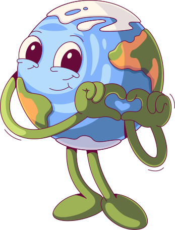

<div class="background">
  
  
  
  
  

  <div class="content">
    <div class="recomended-missions-container" *ngIf="user$ | async as user">
      <h2>Missões recomendadas</h2>
      <div *ngIf="recomendedActivities.length != 0; else noRecomendedActivities">
        <div *ngFor="let item of recomendedActivities; let i = index">
          <div class="recomended-mission" *ngIf="i <= 2">
            <h3>{{item.title}}</h3>
            <div class="mission__content">
              <p class="mission__description">
                {{item.description}}
              </p>
              <p class="xp">{{item.xp}}xp</p>
              <a class="mission__add-button" (click)="saveMissionOnProfile(user, item)">+</a>
            </div>
          </div>
        </div>
      </div>
      <p class="alert">Realize estas atividades fora do computador e depois adicione-as para ganhar pontos!</p>

      <ng-template #noRecomendedActivities>
        <p>Parabéns, você completou todas as atividades recomedadas! volte mais tarde para realizar novas
          atividades</p>
      </ng-template>
    </div>

    
  </div>
</div>
